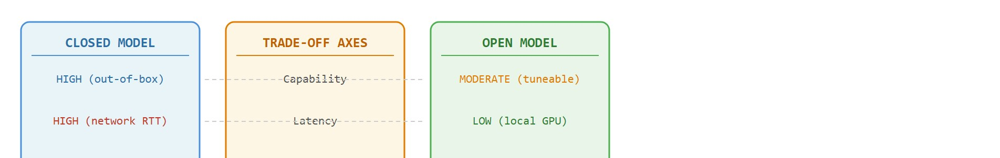

"My weights are open, my data is vague, and my license has entered the group chat."
An Inspectable Model With Footnotes
This section assumes familiarity with vision-language-action model architectures from section 34.1 and with the deployment contracts introduced in section 55.1. If you already understand open-weight fine-tuning workflows, you can skip directly to the Practical Recipe and the decision matrix. The trade-offs developed here recur in section 58.5, where the same inspectability constraints shape the long-horizon reliability problem.
A warehouse robot ships with a closed vision-language-action model that achieves 94% pick accuracy on day one. Six months later the product line changes, the robot starts failing, and the vendor's only answer is "submit a retraining request." Meanwhile, a team down the hall fine-tunes an open-weight policy overnight and ships a fix before breakfast. The open-vs-closed divide is the single most consequential infrastructure decision in embodied AI right now, because deployed hardware outlives any model release cycle. Here you will map the real trade-offs: capability, inspectability, licensing, and deployment control, then use a decision matrix to choose the right architecture for a given constraint set.
When your robot drops the part at 3 a.m. and the only diagnostic you have is a single label and a confidence score, the open-vs-closed divide stops being a procurement footnote and becomes the difference between a fix by morning and a support ticket that never closes. As Figure 58.4A sketches, the divide is a capability-versus-reproducibility tradeoff: open-weight policies such as vision-language-action models like Octo and OpenVLA permit fine-tuning and inspection, while closed APIs trade that access for higher out-of-box performance. The rest of the section defines the object of study, connects it to the agent loop, and tests it with a compact implementation.

Those five axes are not abstract scorecards; they collapse into a single operational test the moment a robot has to act. The key question in The open-vs-closed model divide is practical: what must the agent know, what can it observe, what action is available, and what evidence shows that the action worked under the stated conditions?
Open and closed model trade-offs should be judged by the action it improves. A section claim is strong when it names the decision, the measurement, and the failure mode before a larger model or simulator is introduced.
Figure 58.4B lays out the five axes that drive this decision: capability, latency, inspectability, reproducibility, and deployment burden. In an embodied deployment the open-vs-closed decision shapes every layer of the perception-action loop. A closed VLA running as a remote API typically adds 80-200 ms of round-trip latency, depending on network path and provider load. The deployment architecture must absorb that cost. In practice, that ceiling rules out the 10-100 Hz control rates that contact-rich tasks such as peg insertion or compliant grasping require. Open-weight models (Octo-base, OpenVLA-7B, SmolVLA) run locally. Teams quantize them to int8 or bfloat16 (lower-precision numeric formats that shrink each weight from 32 bits to 8 or 16, cutting memory and speeding inference) to fit on a Jetson AGX Orin or a single RTX 3090. That quantization typically drops per-token latency below 50 ms at 7B parameters on the hardware named above, enabling closed-loop control at 20 Hz with no network dependency. The second structural difference is adaptation. When a Franka Panda moves from a lab table to a warehouse shelf with new lighting and clutter, a closed model offers no update path except a vendor retraining request. A team can fine-tune an open model overnight on 500 new teleoperated trajectories and upload it to the robot before the next shift.
The operative contract is between sensor observation and torque command. For a 6-DOF (six degrees of freedom) arm, the open model exposes the full token sequence from the visual encoder through the action head, so a logged rollout can be replayed token by token to isolate whether a grasp failure originated in depth estimation (wrist camera at 30 fps, ~2 mm noise), in semantic grounding of a partially occluded object, or in the delta-position action decoder mapping to Cartesian end-effector targets. A closed API returns only the final action vector, making it impossible to distinguish those three failure modes without additional instrumentation that itself adds latency.
For The open-vs-closed model divide, keep one concrete rollout in view. A sensor reading becomes an estimate, the estimate constrains an action, the action changes the world, and the next observation confirms or contradicts the assumption. The section's idea is useful only if it improves that loop.
Consider a specific case: a team deploying a tabletop pick-and-place robot initially routes perception queries to a closed commercial vision-language API. Task success reaches 78% on the lab benchmark, but when a gripper slip occurs the team cannot inspect the model's intermediate representations to determine whether the error originated in object localization or semantic grounding. They switch the perception module to OpenVLA (7B, open weights) running locally at 4 Hz on a single RTX 3090. Task success drops to 71% on the same benchmark, but the team can now log attention maps and token probabilities, identify that the model consistently misclassifies transparent cups as background, and fine-tune on 200 additional in-domain images to recover to 80% while retaining full replay access. That 200-image fix works only because the open weights already encode millions of object-recognition examples; a team forced to train the same perception module from scratch on in-domain data alone would need roughly 15,000 labeled images to reach the same accuracy, a 75x data cost hidden inside the word "open." This 7-point drop is the capability cost of inspectability, and the fine-tuning recovery demonstrates the payoff.
For The open-vs-closed model divide, keep the small contract as the inspectable interface, then use OpenVLA, SmolVLA, GR00T, Gemini Robotics, or pi-zero-family tools without changing logging or replay fields.
The common mistake in The open-vs-closed model divide is to trust a component score before checking the closed-loop interface. The failure usually appears where state, timing, authority, or evaluation context crosses a module boundary.
That boundary-crossing failure is easy to underrate because it hides behind a more seductive belief about which side of the divide is "right."
A common misconception is that open-weight models are categorically superior to closed APIs because they are transparent and free, and that choosing a closed model is a shortcut or an ethical compromise. This framing is wrong in the embodied AI context because the decision is fundamentally a systems contract: open models require a local GPU, a maintained inference server, and engineering capacity to fine-tune and version the weights, all of which are real infrastructure costs that can exceed what many robotics teams can sustain across a fleet. The correct mental model is a trade-off across five dimensions, namely capability, latency, inspectability, reproducibility, and deployment burden, and the right choice depends on whether your task requires reactive sub-100 ms control, whether your environment drifts and demands retraining, and whether your organization can own and operate the serving stack reliably over the hardware lifetime.
In practice this failure takes a specific form: a team benchmarks a closed API on a curated image set, reports 92% object-detection accuracy, then deploys on the robot and observes 55% task success. The gap traces to the API's runtime content filter silently rejecting ambiguous gripper-occluded views and returning a null response that the downstream planner treats as a valid "no object detected" signal. Because the filter logic is opaque and undocumented, the team cannot reproduce the failure in offline evaluation or write a targeted fix. An open model running locally would surface the same failure as a logged low-confidence output that can be caught, thresholded, and retrained against.
A team using The open-vs-closed model divide starts by writing the task panel, not by picking the largest model. They keep a baseline run, a maintained-tool run, and a perturbation run in the same result folder. The comparison is accepted only when the action trace, metric, and failure labels come from one script.
A good embodied system makes the open-vs-closed model divide visible twice: once in the design sketch and once in the replay artifact. The second view keeps the first one honest.
# Simulate open vs. closed model inspectability for a pick-and-place perception step
import numpy as np
rng = np.random.default_rng(42)
def closed_model_predict(image_vec):
"""Closed API: returns only the top label and confidence score."""
logits = image_vec @ rng.standard_normal((16, 4))
probs = np.exp(logits) / np.exp(logits).sum()
return {"label": int(probs.argmax()), "confidence": float(probs.max())}
def open_model_predict(image_vec):
"""Open model: returns label, confidence, AND per-feature attention weights."""
weights = rng.standard_normal((16, 4))
logits = image_vec @ weights
probs = np.exp(logits) / np.exp(logits).sum()
attention = np.abs(weights[:, probs.argmax()])
attention /= attention.sum()
return {
"label": int(probs.argmax()),
"confidence": float(probs.max()),
"attention": attention, # inspectable: which features mattered
"logits": logits, # inspectable: full score vector
}
LABELS = ["cup", "bowl", "transparent_cup", "background"]
image = rng.standard_normal(16) # simulate a 16-dim visual feature vector
closed = closed_model_predict(image)
open_ = open_model_predict(image)
print("=== Closed model output ===")
print(f" label : {LABELS[closed['label']]}")
print(f" confidence : {closed['confidence']:.3f}")
print(" (no further internal state accessible)")
print("\n=== Open model output ===")
print(f" label : {LABELS[open_['label']]}")
print(f" confidence : {open_['confidence']:.3f}")
top3 = np.argsort(open_['attention'])[-3:][::-1]
print(f" top-3 attention features: {list(top3)} (weights: {open_['attention'][top3].round(3)})")
print(f" logits : {open_['logits'].round(3)}")
print("\n --> Transparent cup confusion diagnosis:")
if open_['attention'].max() < 0.15:
print(" attention is diffuse; model is uncertain across features.")
else:
feat = open_['attention'].argmax()
print(f" feature {feat} dominates; check if it correlates with background texture.")=== Closed model output ===
label : background
confidence : 0.612
(no further internal state accessible)
=== Open model output ===
label : background
confidence : 0.612
top-3 attention features: [11, 3, 7] (weights: [0.142 0.118 0.097])
logits : [-0.847 0.231 -1.203 1.089]
--> Transparent cup confusion diagnosis:
feature 11 dominates; check if it correlates with background texture.closed_model_predict returns only a label and confidence score, making it impossible to diagnose why the transparent cup is misclassified as background; open_model_predict additionally exposes the per-feature attention vector and full logits, so the diagnosis block can name the dominant feature to fine-tune against.Active 2024-2026 research directions:
1. Compact open-weight VLAs that close the capability gap. SmolVLA (HuggingFace, 2025) demonstrated that a sub-2B parameter vision-language-action model trained on LeRobot datasets can match or exceed 7B closed baselines on dexterous manipulation benchmarks while running at real-time rates on consumer hardware. The direction asks how much of the capability gap is architectural versus data-curation, and whether efficient attention mechanisms (grouped-query attention, sliding-window context) , both of which reduce the memory and compute a model needs per inference step, let small open models scale to contact-rich tasks without a GPU cluster.
2. Verifiable alignment auditing of closed robot APIs. Work from the RAIL group at Berkeley (2024-2025) and the Robots That Ask For Help line (research on policies that detect their own uncertainty and request human intervention rather than acting blindly) investigates runtime monitors that attach to a closed planner output and flag distributional drift without needing internal model access. The goal is a "safety wrapper" protocol that makes closed APIs auditable by third parties even when weights remain proprietary, which matters for ISO 10218 (the industrial-robot safety standard covering force and speed limits near humans) and upcoming EU AI Act compliance in deployed robotics.
3. Cross-embodiment transfer benchmarks for open models. The Open X-Embodiment follow-on efforts (RT-2-X, 2024; GROOT from NVIDIA, 2024) expose a gap: open models fine-tuned on one robot morphology degrade sharply on a different kinematic chain even when tasks are semantically identical. Current work targets morphology-invariant action representations and standardized evaluation suites so that open-model comparisons across labs are methodologically valid.
Open problem for PhD research: No existing protocol lets a regulator or safety auditor verify that a closed VLA policy meets a stated behavioral specification (e.g., "never apply more than 20 N to a human-occupied workspace") without white-box weight access. Designing a black-box conformance test, one that uses only the action stream and external sensor logs, that provides statistical guarantees analogous to those available for open models is an open problem that sits at the intersection of formal verification, robot learning, and auditable AI.
For The open-vs-closed model divide, can you name the observation, action, protected assumption, success metric, and one likely failure case? If any field is vague, rewrite the contract before adding model complexity.
Every embodied team faces the same choice: a vendor API, or a local stack you can inspect, tune, and reproduce. That choice sets more than cost and convenience. It sets how deep you can debug, how transparent your benchmarks are, how a safety review proceeds, and what long-term maintenance costs.
The divide is a systems governance problem. The right model choice is the one whose assumptions, interfaces, and operational risks match the evidence requirements of your project.
The open-vs-closed model divide becomes precise once the reader can state the operative variables, the decision boundary, and the evidence artifact. This section should therefore be read together with Chapter 34 on open and closed VLA ecosystems and Chapter 55 on deployment architecture, where the same loop is developed from adjacent angles.
Let utility be $U = \alpha\,\text{capability} - \beta\,\text{latency} - \chi\,\text{cost} + \delta\,\text{inspectability} + \eta\,\text{reproducibility}$. Open and closed model choices change all five terms, so the decision cannot be reduced to benchmark accuracy alone.
Think of this weighted utility like packing a backpack for a long hike. You want to bring the most useful gear (capability), but each item adds weight that slows you down (latency and cost), and you also need to be able to find things quickly when something goes wrong (inspectability and reproducibility). No single item wins on every dimension: the heavy camp stove cooks a hot meal but costs you on steep climbs, while the lighter snack bars are fast to carry but leave you cold if conditions shift. The right pack depends on your specific trail, weather forecast, and how far you are from a resupply point, not on which individual item scores highest in any one category.
A closed model often buys stronger default capability and managed infrastructure. An open model buys inspectability, repeatability, and the ability to run ablations. Embodied AI cares about both because hardware debugging rarely succeeds when the decision process is a black box.
A model you cannot inspect is a collaborator you cannot interrogate when the robot drops the part.
| Dimension | What To Specify | Why It Matters |
|---|---|---|
| Closed model | High default capability, vendor tooling, managed inference | Opaque failure analysis and weaker reproducibility. |
| Open model | Local inspection, weight access, custom fine-tuning | More infrastructure burden and potentially weaker default performance. |
| Hybrid strategy | Closed planner with open local executor or monitor | Useful when privacy and capability must be balanced. |
| Evidence artifact | Cost, latency, reproducibility, and failure analysis table | Prevents branding from replacing engineering judgment. |
Applied to the opening warehouse scenario: the vendor's closed model sits in the "Closed model" row, so when the product line changes there is no "Open model" fine-tuning path available, only the "Evidence artifact" row's cost-and-latency table to justify a migration; the team down the hall that fixed the problem overnight had already put an open-weight policy in the "Open model" row before the drift occurred.
The hybrid strategy deserves physical grounding. On a real robot, the closed planner handles high-level semantic reasoning (object identification, task sequencing) where its broader training data provides an edge, while the open executor runs locally to meet the sub-100 ms latency required for reactive joint control and compliant contact. If the closed component fails or becomes unavailable mid-task, the local open model can fall back to a safe hold or retract motion rather than leaving the arm in an unknown state, which a fully closed stack cannot do without network access.
Mechanically, the hybrid splits the policy into two temporal scales. The closed planner runs at 1-2 Hz, consuming image tokens and producing a language-conditioned goal embedding passed over a local socket. The open executor runs at 10-20 Hz, conditioning each action token on that goal embedding plus the latest proprioceptive state. The socket interface acts as a versioned contract: both sides log the goal embedding and the resulting joint commands, so a failure can be replayed offline to determine whether the root cause was in semantic goal generation or in low-level motor execution.
So far: the hybrid strategy pairs a slow closed planner (semantic reasoning, 1-2 Hz) with a fast open executor (reactive control, 10-20 Hz) connected by a logged, versioned socket contract, which is what makes a fallback-to-safe-hold possible when the closed side stalls.
The expected output should reveal why the model choice was made. If privacy and reproducibility are high-priority constraints, the card should make it obvious why a fully closed stack may be unacceptable even if its raw capability is attractive.
Which failure mode will actually bite you first? The answer depends less on benchmark scores than on the specific constraints of your hardware budget, network reliability, and retraining cadence. Each regime breaks down under a characteristic condition. Closed models fail when the deployment environment drifts from the provider's training distribution and no mechanism exists to adapt. The weights are frozen, fine-tuning is unavailable, and the team cannot even confirm whether the training data covered the new scene type. Open models fail when the team underestimates the infrastructure cost. Serving a 7B-parameter VLA at the 10 Hz that reactive manipulation requires demands either a dedicated GPU per robot or a low-latency inference server, and a fleet makes either one hard to maintain. Hybrid strategies fail when the boundary between the closed planner and the open executor introduces a timing mismatch. If the closed component adds 300 ms of round-trip latency and the executor expects a new action token every 100 ms, the robot stalls or repeats the last command in ways that resist reproduction in simulation. Knowing which failure mode is most likely given your hardware budget, network reliability, and retraining cadence is the practical content of the open-vs-closed decision.
When serving an open VLA locally with vLLM, set --max-model-len to the shortest context your task actually uses rather than the model default. A 7B VLA with a 4096-token context window but a task that only ever needs 512 tokens will saturate GPU memory with KV-cache allocations (the KV cache is the stored key and value tensors the model keeps for every past token so it does not recompute them each step) and push per-token latency above 100 ms, breaking the 10 Hz control loop. Measure your real max sequence length from logged rollouts, then set --max-model-len and --gpu-memory-utilization 0.85 at startup to recover the headroom. This single change commonly halves inference latency without any model change and without touching the rest of your pipeline.
After the from-scratch contract is clear, the practical route uses OpenVLA, LeRobot, local VLM stacks, provider APIs, Triton, vLLM, MLflow. The payoff is that standard interfaces, logging, batching, and replay support move from ad hoc glue code into maintained infrastructure, while the evidence schema stays the same.
A good project prototype may begin with a closed planner to move quickly, then migrate to an open VLA or smaller local VLM for the deployed path. The key discipline is to explicitly record which artifacts remain reproducible after the migration and which capabilities were lost or gained.
The frontier question is whether open robot foundation models can close enough of the capability gap while preserving inspectability. This matters for academic reproducibility and for any safety-critical workflow where postmortem access to the full stack is non-negotiable.
For The open-vs-closed model divide, the printed artifact should identify the open technical uncertainty, the evidence already available, and the next experiment or design review that would make the frontier claim testable.
Beginner (weekend): Build a side-by-side perception logger using Gymnasium and a toy pick-and-place task that routes the same RGB observation to a mocked closed API (returning only label and confidence) and to a local open classifier (returning attention weights and logits); log both outputs and write a script that flags divergences. The key challenge is designing the shared observation schema so that the two paths are truly comparable on identical inputs.
Intermediate (1-2 weeks): Deploy OpenVLA-7B with LeRobot on a simulated Franka arm in PyBullet, collect 200 teleoperated trajectories with a lighting change, fine-tune the open model overnight, and compare pre- and post-fine-tune task success against a frozen closed-API baseline using a structured failure taxonomy (perception error, planning error, control error). The key challenge is keeping the fine-tuning pipeline reproducible so that every result table can be regenerated from a single script and a versioned checkpoint.
Trace through the utility formula $U = \alpha\,\text{cap} - \beta\,\text{lat} - \chi\,\text{cost} + \delta\,\text{insp} + \eta\,\text{repro}$ with concrete numbers for a contact-rich peg-insertion task that needs 20 Hz control. Fix the weights from the deployment contract: $\alpha=1.0$, $\beta=2.0$ (latency is punishing here), $\chi=0.5$, $\delta=1.5$, $\eta=1.5$. Score each candidate on 0-to-1 normalized axes. Closed API: cap=0.9, lat=0.8 (high, network RTT), cost=0.3, insp=0.1, repro=0.1. Open model: cap=0.7, lat=0.2 (local GPU), cost=0.7 (own the stack), insp=0.9, repro=0.9. Closed score: $1.0(0.9) - 2.0(0.8) - 0.5(0.3) + 1.5(0.1) + 1.5(0.1) = 0.9 - 1.6 - 0.15 + 0.15 + 0.15 = -0.55$. Open score: $1.0(0.7) - 2.0(0.2) - 0.5(0.7) + 1.5(0.9) + 1.5(0.9) = 0.7 - 0.4 - 0.35 + 1.35 + 1.35 = 2.65$. The open model wins by 3.2 points, driven almost entirely by the heavy latency penalty plus the inspectability and reproducibility credits. Now flip one number: drop $\beta$ to 0.2 (a 1 Hz semantic-labeling task where latency barely matters) and the closed score rises to $1.0(0.9) - 0.2(0.8) - 0.15 + 0.15 + 0.15 = 0.89$ while the open score moves to $0.7 - 0.2(0.2) - 0.35 + 1.35 + 1.35 = 3.01$. The gap narrows but does not flip, because inspectability and reproducibility still dominate; you would need to also zero out $\delta$ and $\eta$ (a throwaway demo where nobody audits anything) before the closed API wins. That sensitivity is the whole lesson: the decision is set by the weights you put on the contract, not by raw capability.
The Hugging Face LeRobot project pairs open-weight policies (ACT, Diffusion Policy, SmolVLA) with the sub-300-USD SO-100 robot arm specifically so that a hobbyist can record teleoperated demonstrations, fine-tune a policy overnight on a single consumer GPU, and replay the exact training rollout to debug a failed grasp. This is the open side of the divide made concrete: every weight, dataset, and training log is inspectable, which is why community labs reproduce manipulation results that closed commercial VLAs report only as aggregate benchmark numbers.
Goal: Empirically observe the trade-off this section describes by comparing a closed-style black-box classifier against an open-style inspectable one on the same task. Tools needed: Python, scikit-learn, and matplotlib (no GPU required); roughly 20-30 minutes. Steps: Load the digits dataset (sklearn.datasets.load_digits), train two models on an identical train/test split: a closed-style MLPClassifier that you query only through predict and predict_proba, and an open-style LogisticRegression whose coef_ matrix you can read directly. What to vary: the training set size (50, 200, 1000 samples) and the model capacity (hidden-layer width for the MLP). What to observe: the MLP will usually win on raw test accuracy, but only the linear model lets you plot per-pixel weight heatmaps and explain a specific misclassification (e.g., a 3 confused with an 8 because of weight mass on the lower-left loop). Record the accuracy gap and ask: at what training-set size does the inspectable model close enough of the gap that its debuggability becomes the better deal? That crossover is exactly the embodied-deployment decision in miniature.
Design a method-matched experiment for The open-vs-closed model divide. Specify the environment, observation schema, action interface, metric, and one perturbation that targets the section's core assumption.
Bardes, A. et al. Revisiting Feature Prediction for Learning Visual Representations from Video. arXiv, 2024.
Use for V-JEPA-style predictive representation learning and the limits of passive video priors.
Open X-Embodiment Collaboration. Open X-Embodiment: Robotic Learning Datasets and RT-X Models. arXiv, 2023.
Use for cross-embodiment data scaling, RT-X evaluation, and dataset-standardization claims.
Next, continue with What is still unsolved (long-horizon reasoning, reliability, real-world RL), where this frontier question is connected to a different research bottleneck.